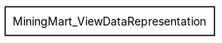
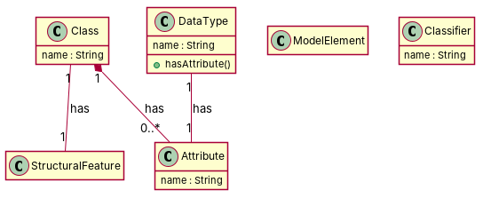

← all cases
D2/MiningMart_ViewDataRepresentation — model qwen, condition B, run 1
1. Requirements (input)
R1: ModelElement is a class that belongs to SimplifiedMiningMart Package
R2: Classifier is a class that belongs to SimplifiedMiningMart package
R3: StructuralFeature is a class that belongs to SimplifiedMiningMart package
R4: Class is a class that belongs to SimplifiedMiningMart package. It has an attribute named "name" of type "String"
R5: DataType is a class that belongs to SimplifiedMiningMart package
R6: Attribute is a class that belongs to SimplifiedMiningMart package
R7: A Class is composed of one or several attributes
R8: A DataType has one and only one Attribute
R9: An Attribute is associated to one and only one Class
2. Result 1 → Result 2 (ambiguity removal)
Red, struck-through: removed by ambiguity removal; green: added.
| classes (3 → 3) |
|---|
| Classifier |
| DataType |
| ModelElement |
| attributes (2 → 2) |
|---|
| Attribute.is |
| Classifier.name |
3. Ambiguity tags
| id | req | type | cue | status | readings / explanation |
|---|
| A1 | R7 | quantifier | one or several | resolved | A class is composed of one attribute.; A class is composed of several attributes.
The phrase 'one or several' is ambiguous and could refer to either a single attribute or multiple attributes. |
4. Diagrams generated from the shared model
usecase diagram
class diagram
5. Code skeleton (Python; Java in code/java/)
"""Code skeleton generated from the shared model of D2/MiningMart_ViewDataRepresentation.
Every class and method records the requirement(s) it traces to."""
from __future__ import annotations
import dataclasses as _dc
import enum as _enum
import typing as _t
@_dc.dataclass
class Class:
"""Source: R4"""
name: _t.Optional[str] = None
attributes: _t.List["Attribute"] = _dc.field(default_factory=list)
structuralFeature: _t.Optional["StructuralFeature"] = None
@_dc.dataclass
class Attribute:
"""Source: R6"""
name: _t.Optional[str] = None
@_dc.dataclass
class DataType:
"""Source: R5"""
name: _t.Optional[str] = None
attribute: _t.Optional["Attribute"] = None
def hasAttribute(self) -> None:
"""Operation."""
raise NotImplementedError
@_dc.dataclass
class ModelElement:
"""Source: R1"""
pass
@_dc.dataclass
class Classifier:
"""Source: R2"""
name: _t.Optional[str] = None
@_dc.dataclass
class StructuralFeature:
"""Source: R3"""
pass
6. Validation, checks and traceability
| python_compiles | True |
|---|
| java_compiles | True |
|---|
| attribute_mismatches | 0 |
|---|
| method_mismatches | 0 |
|---|
| use_cases | 0 |
|---|
| use_cases_without_actor | 0 |
|---|
| use_cases_without_method | 0 |
|---|
| actors_without_use_case | 0 |
|---|
| relations_to_unknown_class | 0 |
|---|
| inconsistencies | 0 |
|---|
| inconsistency_rate | 0.0 |
|---|
| requirement_coverage | 1.0 |
|---|
| validator fixes | |
|---|
| assumptions for open ambiguities | [] |
|---|
7. Scores against the reference
| element | P | R | F1 | TP/FP/FN |
|---|
| classes | 1.0 | 1.0 | 1.0 | 6/0/0 |
| attributes | 0.25 | 1.0 | 0.4 | 1/3/0 |
| relations | 0.667 | 0.286 | 0.4 | 2/1/5 |
| relations_strict | 0.667 | 0.286 | 0.4 | 2/1/5 |